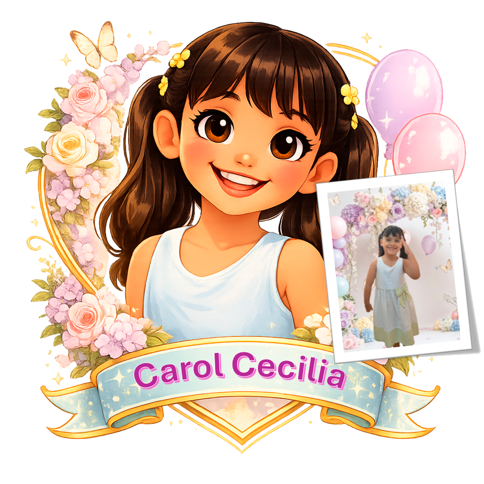
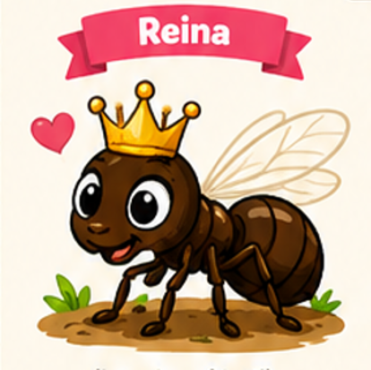
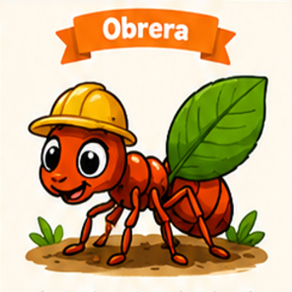
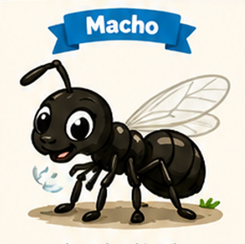
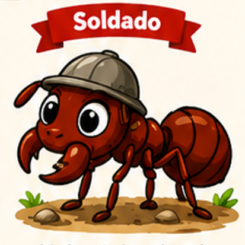

🐜 Carito te invita a descubrir el mundo de las hormigas
¡Elige una hormiga! Podrás conocer qué hace, explorarla en 3D y colocarla en tu espacio real usando la realidad aumentada del celular.
👇 ¿Cuál quieres descubrir primero?

👑 Reina
Conoce a la reina de la colonia.
Explorar →
🐜 Obrera
Descubre todo el trabajo que realiza.
Explorar →
Macho
Descubre su función en la colonia.
Explorar →
🛡️ Soldado
Conoce cómo ayuda a defender la colonia.
Explorar →📱 Después de explorar una hormiga, pulsa “Volver a elegir otra hormiga” para regresar aquí.